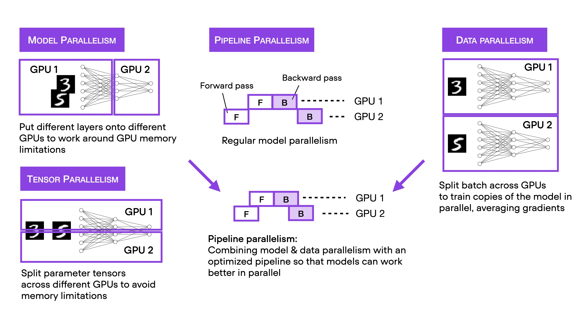

Parallelize Training
Alexandre Strube // Sabrina Benassou
March 01, 2023
device = torch.device(args.device)
images_data = data_loader.ImagenetH5(h5_file, "train", transforms["train"])
dataloadersh5= DataLoader(images_data, batch_size=batch_size, num_workers=workers)
model = resnet50(True)
model.to(device)
criterion = nn.CrossEntropyLoss()
optimizer = torch.optim.SGD(model.parameters(), lr=args.lr, momentum=args.momentum,
weight_decay=args.weight_decay)
print("Start training")
for epoch in range(args.epochs):
train_loss = train_one_epoch(model, criterion, optimizer, dataloaders["train"],
device, epoch)
evaluate(model, criterion, dataloaders["val"], device=device)
 Shamelessly stolen from twitter